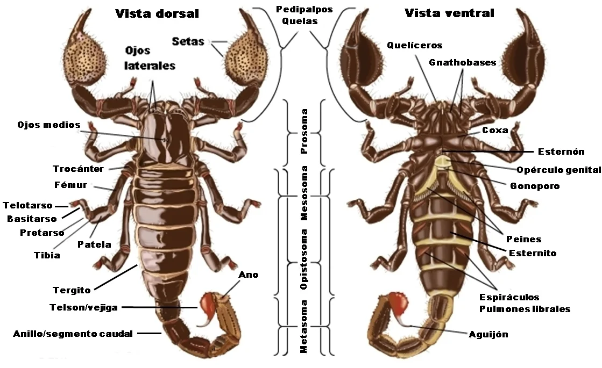

<section id="services" class="services section-bg">
    <div class="container">
      <br>
      <br>
      <div class="section-title" data-aos="fade-up">
        <h2>Escorpiones</h2>
        <p class="texto_esc">Se llama escorpiones o alacranes a un orden de aproximadamente 1.400 especies 
          diferentes de arácnido, provisto de un par de apéndices frontales en forma de tenaza 
          y de una cola terminada en un aguijón venenoso. Es uno de los mayores depredadores del 
          mundo de los artrópodos. En algunos casos la potencia de su veneno dañar animales de gran 
          tamaño, incluido el ser humano. Se trata de animales solitarios, que no hacen manadas y 
          que sólo buscan a sus semejantes para procrear. Tiene hábitos generalmente nocturnos y sigilosos 
          que los apartan de sus enemigos naturales y de muchos competidores y depredadores.</p>
      </div>

      <div class="row">
        <div class="col-md-6 col-lg-3 d-flex align-items-stretch mb-5 mb-lg-0" data-aos="fade-up">
          <div class="icon-box icon-box-pink">
            <div class="icon"></div>
            <h4 class="title"><a [routerLink]="['../Escciclo']">Ciclo biológico</a></h4>
            
          </div>
        </div>

        <div class="col-md-6 col-lg-3 d-flex align-items-stretch mb-5 mb-lg-0" data-aos="fade-up" data-aos-delay="100">
          <div class="icon-box icon-box-cyan">
            <div class="icon"></div>
            <h4 class="title"><a [routerLink]="['../Escconservacion']">Conservación</a></h4>
            
          </div>
        </div>

        <div class="col-md-6 col-lg-3 d-flex align-items-stretch mb-5 mb-lg-0" data-aos="fade-up" data-aos-delay="200">
          <div class="icon-box icon-box-green">
            <div class="icon"></div>
            <h4 class="title"><a [routerLink]="['../Escmuda']">Muda</a></h4>
            
          </div>
        </div>

        <div class="col-md-6 col-lg-3 d-flex align-items-stretch mb-5 mb-lg-0" data-aos="fade-up" data-aos-delay="300">
          <div class="icon-box icon-box-blue">
            <div class="icon"></div>
            <h4 class="title"><a [routerLink]="['../Escanatomia']">Anatomía</a></h4>
            
          </div>
        </div>

      </div>
    </div>
  </section><!-- End Services Section -->